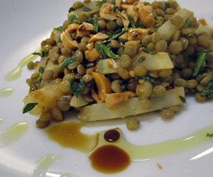

Linsen- Sellerie-Salat mit Minze und Haselnüssen
6 von 660 g Haselnüsse bei 140 Grad im Ofen 15 Minuten rösten, abkühlen und grob hacken. 200 g Puy-Linsen in 7 DL Wasser mit zwei Blätter Lorbeerblätter und 4 Zweige Thymian 15-20 Minuten garen bis die Linsen al dente sind. Abgiessen und in einen Topf geben. Währenddessen ca. 500 g Sellerie schälen und in Stäbchen schneiden, in Salzwasser ca. 10 kochen bis sie weich sind, abgiessen und zu den Linsen geben. Mit 4 EL Olivenöl, 3 EL Rotweinessig sowie Salz und Pfeffer marinieren. Die Haselnüsse und 4 EL gehackte frische Minze dazu geben und lauwarm servieren.
